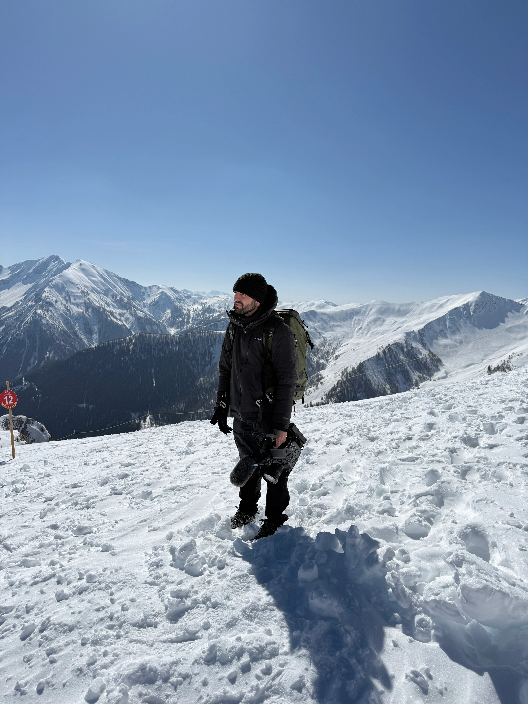

Timothé IMBERT
Réalisateur • Chef opérateur • Photographe
Réalisateur et photographe basé dans les Alpes-de-Haute-Provence, je mets depuis plus de 5 ans mon expertise audiovisuelle au service des collectivités, associations et entreprises qui cherchent un regard professionnel sur leur territoire, leurs projets et leur identité.
Formé dans une école de cinéma à Montréal, Canada, et diplômé d'un BTS Communication en France, j'apporte une exigence cinématographique à chaque projet : film institutionnel, documentaire, reportage, ou contenu publicitaire.
J'ai eu la chance de travailler sur des projets exigeants et engagés : un documentaire réalisé à Auschwitz, distingué par le label UNESCO, des tournages dans l'Himalaya au Népal à 4 000 mètres d'altitude, ou encore en Inde. Ces expériences m'ont appris à m'adapter à toutes les conditions pour livrer un résultat à la hauteur des enjeux.
Réalisateur, chef opérateur et photographe, je travaille avec des collectivités, des associations, l'Éducation Nationale ainsi que de nombreuses autres structures, avec une connaissance précise de leurs besoins en communication et la vision cinématographique pour y répondre.
Je suis disponible pour des déplacements en France et à l'étranger.
Parlons de votre projet